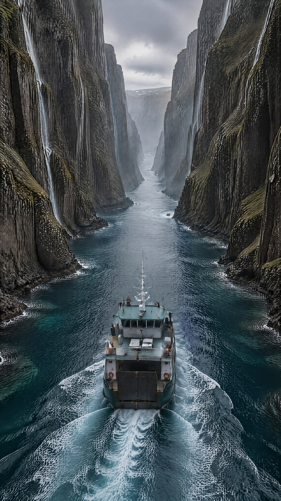

Orra
A cool coastal country of steep shores, old towns and an intimate knowledge of sea and weather.

A field guide to another world
An evolving record of distant coasts, river cultures and the living things that inhabit them.
Begin exploringThe western cliffs of Orra
Early autumn
01 / The world
Elsewhere turns beneath a slightly cooler sun. Its year is short—281 local days—and each day lasts a little over twenty-five hours. Two moons cross its sky: one silver-grey, one copper.
Across that world, cultures have learned their own ways of naming the tides, reading the rain and making a home among lives unlike our own.
02 / Places & peoples
A cool coastal country of steep shores, old towns and an intimate knowledge of sea and weather.
A land shaped by the coming and retreat of water—and by the lives that know before people do.
An old plateau culture whose roads, river crossings and cities carry the traces of the Mazharai past.
Field note · Orra
/ˈθar.vɛn/ · tarw-en, “broad-necked”
Massive, guarded herbivores whose neck shields make them one of Orra’s most recognisable animals. In life they move in wards; in Orran memory, they have come to signify protection and mourning.
Read the field entry03 / Selected field index
“Every culture sees the same two moons. None of them sees the same sky.”
From the astronomical notes